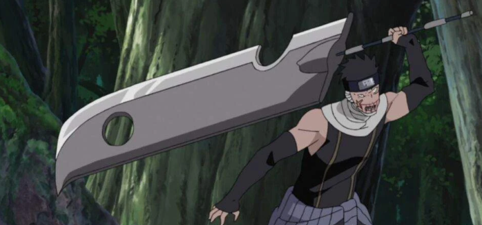
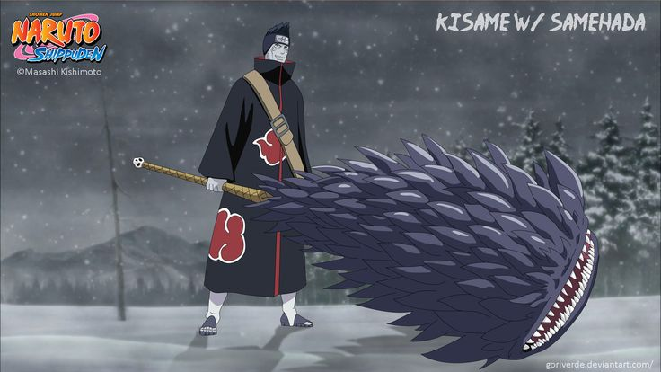
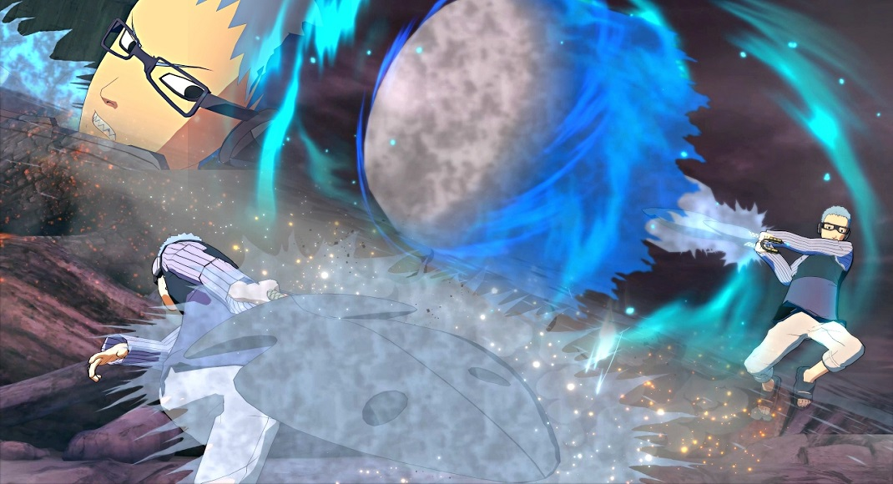
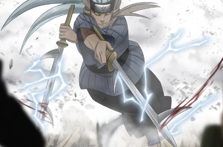
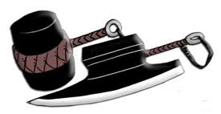
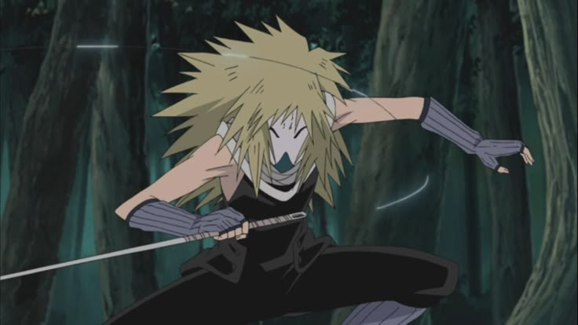
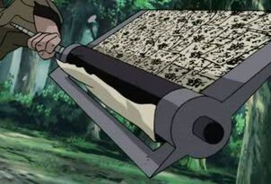

SETE ESPADAS DA NÉVOA
Inspecionar Arsenal:
Kubikiribōchō

A Lâmina do Carrasco
Uma espada maciça em forma de faca de açougueiro gigante. Devido ao seu tamanho imenso, exige uma força física extraordinária de seu portador.
Sua habilidade mais notável é a capacidade de se regenerar a partir do ferro colhido no sangue de suas vítimas. Não importa o quanto seja lascada ou quebrada, contanto que continue cortando inimigos, ela voltará ao seu estado original perfeito.
Sisteminas de Combate
Rank da Arma: S
- Regeneração Férrea: Ao causar dano letal (ou crítico), recupera sua durabilidade em 100%.
- Dano Físico: +1.500 HP em cortes diretos.
- Desvantagem: O usuário precisa de Atributo de Força A ou superior para evitar penalidade de -30% em Agilidade.
Samehada

A Pele de Tubarão
A mais terrível de todas as sete espadas. Diferente das outras que cortam, Samehada foi feita para fatiar e rasgar. A espada possui vontade própria e é revestida por escamas pontiagudas que esfolam o alvo.
A Samehada se alimenta do chakra de suas vítimas. Ela absorve o chakra do oponente em combate e pode transferi-lo para curar o seu portador.
Sisteminas de Combate
Rank da Arma: S
- Drenar Chakra: Em cada acerto, drena 5% da Reserva Total de Chakra do inimigo.
- Cura Simbiótica: Pode converter o chakra absorvido em HP para o usuário (100 Chakra = 500 HP).
- Consciência Própria: Pode recusar portadores que não tenham reservas massivas de chakra.
Hiramekarei

A Espada Gêmea
Uma espada com lâmina dupla, enfaixada em ataduras e que possui dois buracos na ponta. É conhecida por ser a mais pesada de todas as lâminas da névoa, mas também a mais versátil.
Hiramekarei é capaz de armazenar o chakra de seu portador e emiti-lo moldando diversas armas feitas de luz de chakra (como martelos, espadas longas ou escudos), dependendo puramente da vontade do usuário.
Sisteminas de Combate
Rank da Arma: S
- Moldagem de Chakra: Custa 50 de Chakra para transformar a lâmina.
- Forma - Martelo: Ignora armaduras e defesas de Rank B ou inferiores.
- Forma - Espada Longa: Aumenta o alcance do golpe em 5 metros.
Kiba

As Espadas do Trovão
Duas lâminas gêmeas imbuídas com relâmpago, aumentando drasticamente sua capacidade de corte e perfuração. São reconhecidas e temidas como as mais afiadas dentre as sete espadas.
Ao canalizar chakra do estilo Raiton, as lâminas se tornam capazes de fatiar praticamente qualquer material, e quem for ferido sofrerá com os efeitos paralisantes da eletricidade percorrendo o corpo.
Sisteminas de Combate
Rank da Arma: S
- Eletrificação: Cada golpe bem sucedido causa uma leve paralisia (reduz esquiva por 1 turno).
- Corte Supremo: +20% na velocidade de ataque devido à leveza e fio da lâmina elétrica.
- Integração Elemental: Aumenta o dano de Jutsus Raiton canalizados através da espada em 30%.
Kabutowari

O Rachador de Elmos
Diferente das espadas convencionais, Kabutowari é composta por um machado de um lado e um martelo gigante conectado por uma tira de couro do outro.
Foi projetada especificamente para quebrar qualquer defesa, por mais sólida que seja. O usuário ataca primeiro com o machado e, em seguida, golpeia as costas do machado com o martelo, garantindo que o impacto destrua escudos, barreiras ou ossos.
Sisteminas de Combate
Rank da Arma: S
- Quebra-Defesa: Ignora totalmente 50% de qualquer bônus de resistência ou defesa física do oponente.
- Impacto Massivo: Se o golpe for defendido por um escudo/barreira, há 70% de chance do equipamento inimigo quebrar.
- Desvantagem: Requer 1 turno de preparação se errar o golpe devido à inércia do peso do martelo.
Nuibari

A Agulha de Costura
Uma lâmina incrivelmente fina e longa, acompanhada por um longo fio de aço na base do cabo. Ela não foi feita para cortar, mas sim para perfurar.
Sua natureza permite que o usuário perfure múltiplos inimigos de uma só vez, "costurando-os" juntos e deixando-os imobilizados e à mercê do assassino, assemelhando-se ao trabalho cruel de uma aranha tecendo a presa.
Sisteminas de Combate
Rank da Arma: S
- Costura Fatal: Capaz de imobilizar até 3 alvos simultâneos se conseguir alinhar o golpe perfurante.
- Alcance Oculto: O fio de aço possui 20 metros, permitindo recolher a lâmina ou prender inimigos à distância.
- Furtividade: Por ser extremamente fina, tem 20% a mais de chance de não ser percebida ou bloqueada em ataques surpresa.
Shibuki

A Lâmina Explosiva
Uma espada larga e assustadora que incorpora um enorme pergaminho cilíndrico de selos explosivos diretamente em sua lâmina. Une o poder de corte físico ao poder destrutivo da pólvora.
Conforme a espada entra em contato com o inimigo, os papéis desenrolam e detonam instantaneamente, causando dano explosivo no impacto antes que o pergaminho se recarregue com mais selos.
Sisteminas de Combate
Rank da Arma: S
- Detonação Imediata: Todo golpe direto ou defendido ativa a detonação, causando dano adicional em área.
- Dano de Área: A explosão afeta todos em um raio de 3 metros do impacto.
- Fator Surpresa: Bloquear a espada não anula o dano explosivo (queima as mãos e defesas do inimigo).